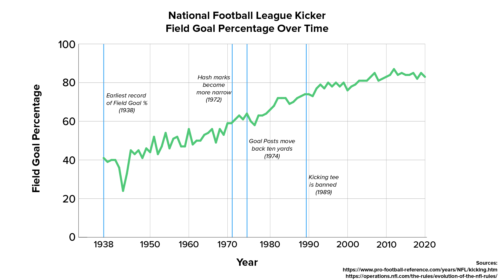
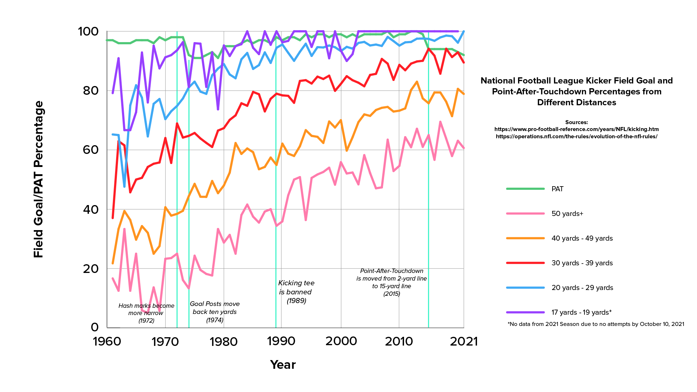
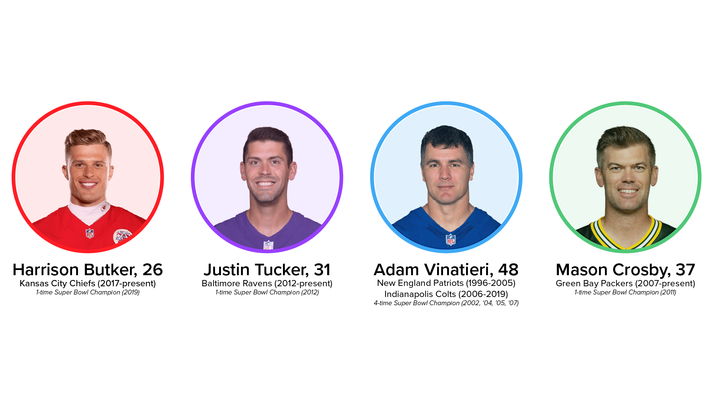
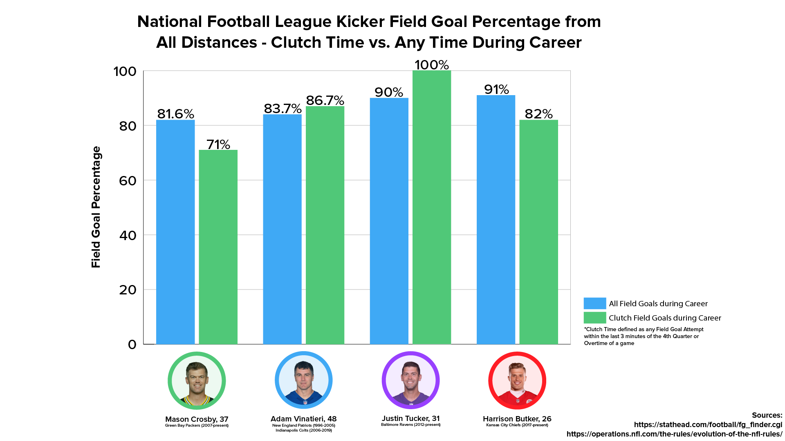

NFL KICKER CASE STUDY
I’m a huge sports guy. It’s something that I pay attention to every day, something I have a plethora of conversations about, and the industry I want to work in down the road. So, it only made sense for me to do this project on something related to my sports passion. I was watching the Sunday afternoon game in early October of my beloved Cincinnati Bengals facing the Green Bay Packers. During the game, in the final three minutes of the game and in overtime, the Packers had 3 different opportunities to win the game with a field goal (with arguably one of the greatest kickers the sport has ever seen) and missed all three. Additionally, the Bengals had two different opportunities in that same time span to win the game, and missed both attempts. It wasn’t until Green Bay kicker Mason Crosby’s fourth attempt in that time span that he made the game-winning kick. It was a sad moment as a Bengals fan to see my team lose, but in reality, the team shouldn’t have even been in that opportunity to win in the first place. Crosby is supposed to make that first field goal and win, not miss three in a row. So, it begged me to ponder the question: how far have NFL kickers come, and why does it seem like they're missing now more than normal?
Photo Creds: Patrick Ogilvie via Unsplash
Over the course of history in the National Football League, place
kickers have seemingly only gotten better. From legends of kicking
with bare feet, to the famous half shoe worn by Tom Dempsey in the
1970s, to the revolutionary synthetic cleats we have today, kicking
has undergone a massive transformation. And while kickers have seemed
to only get better as the years go on, why does it still feel like
they miss more than they should?
First off, what is an NFL kick? A field goal takes place when a team
in possession of the ball elects to place-kick the ball through the
two uprights and above the crossbar, giving them three points to their
team's total score.

NFL Kicker Field Goal Percentage Over Time
We begin by examining the growth of NFL kickers over the course of
the history of football. Since field goal percentage was first
recorded in 1938, the NFL has seen its growth double in percentage,
jumping from making all field goals only 41% of the time to 83% of
the time. There are notable rule changes noted on the chart as well,
from the hash marks moving closer together toward the middle of the
field in 1972, to the goal posts moving back 10 yards from the front
of the goal line, to ultimately the banning of the kicking tee in 1989,
forcing kickers to kick directly off the ground.
As kickers have gotten better over time, they've become able to kick
further distances as well. Field goals can be anywhere from 17 yards
long to 70, 80, or maybe even 90 yards long, although the record for
the longest currently stands at 66 yards long.

Field Goal Percentage Over Time from Certain Distances
In this data set, we can see the same rule changes as in the first graph,
but each line is broken down into a different distance, and as you can infer
from the data, the closer a field goal is to the endzone, the easier it is
to make, and the further away it is to make, the harder it is to make. Since
field goal percentage from certain distances began being tracked in the 1960s,
there is tremendous growth in kickers as a whole across the NFL. Yet, when we
look closely at present-day, we can see that most lines are not at the peak--most
of the lines are on the decline from the peak that came several years
before. So, just from this data set, we can begin to see that kickers are
missing more than they have in the past, yet still immensely better since the
beginning. 30-39 yard field goals are down 3.5% from the 2020 season, 40-49
yard field goals down 1.7%, and 50-59 yard field goals down 3%.
One particular change that's different on this data set is the introduction of
the Point-After-Touchdown (PAT). The PAT (1 point) takes place directly following a
touchdown (6 points) scored by a team. Up until 2015, the PAT took place from
the 2-yard line, making it a 19-yard kick. In 2015, though, the NFL changed the
rules, forcing kickers to kick PAT's from the 15-yard line, making it a 32-yard
kick. Their reasoning was that PAT's became too automatic and the game needed
more challenging kicks to make itself more exciting. Once the NFL changed the
rule in 2015, the PAT percentage took a nosedive, comparatively, and became more
challenging for kickers.
Point-After-Touchdown Percentage Over Time
Looking more closely at PAT percentage over time, we can see that in 2015, the
percentage dropped from an automatic 99% to a comparatively worse 94%. While a
94% completion percentage is still quite good, it isn't as automatic as 99% and
adds a level of uncertainty to the game for fans. Since the rule change, the
percentage has only gone down, though, now standing at 92%, the lowest a PAT
completion percentage has been since 91% during the 1979 season.
Surely, we'll see these numbers bounce back up. If we take a look at the last
major rule change, the goal posts moving back ten yards in 1974, the PAT
percentage dropped drastically from 98% to 91% just two seasons later, and
it ultimately rose back up to become automatic. One reason the percentage could
be lower than last year's is due to the fact that most games were played without
fans due to COVID-19. Kickers may have gotten used to silent stadiums, and once
fans were permitted back into games in 2021, it's taken adjustment for it to
become normal again, and we haven't seemingly gotten back to normal yet.
So far, we can see that kickers are good at their jobs. Maybe slightly less
than a few years ago, but they're essentially the best they've been for the
duration of NFL history.
But, what if we take a look at kicks when they matter
most, not necessarily at a random point during the game. For this, I've drawn
inspiration from other sports and defined the last 3 minutes of the 4th quarter
and overtime as "Clutch Time."
Kicks at Any Point During a Game vs. During Clutch Time
The reason we call the end of a game "clutch time" is because that's when
there's potential for the game to be on the line. Example scenario: there's
3 seconds left on the clock in the game. Our team has the ball on the 30-yard
line. We can either kick a 47-yard field goal, or throw up a pass to the endzone
and hope someone catches it. The kicker in this scenario is called on to win the
game, giving him quite a bit of pressure to stick it through the uprights as time
expires. When he makes it even under the pressure, that's clutch.
In this example, we can see a clear-as-day conclusion that kickers are more
proficient in the clutch, which surprises me. But, when looking at the number of
kicks instead of percentage of field goals made, when can see a substantial
difference. This difference mostly comes from just having to be put in the situation
to kick a field goal during Clutch Time.
Number of Kicks During Clutch Time vs. Outside Clutch Time since 1994
As we see, there's an extraordinarily larger amount of field goal attempts outside of Clutch Time versus attempts during Clutch Time. So, while kickers are making kicks during Clutch Time supposedly more often, they aren't attempting them nearly as often as a normal, random in-game field goal attempt. To further explore Clutch Time, I've brought in a few specific people to examine.
NFL Kickers To Be More Closely Examined
Introduced above is Harrison Butker, Justin Tucker, Adam Vinatieri, and Mason Crosby, all kickers who have reputations of being some of the greatest the game of football has ever seen. These kickers were chosen specifically for their differences in age, experience, years in the league, and success. See below their success in both Clutch Time and Regular Time during a game.
4 NFL Kickers Throughout Their Career in General vs in Clutch Time
Based on this chart, it can be inferred that Justin Tucker and Harrison Butker
are extremely accurate kickers, with both making 90% and 91% of all of their field goals,
respectively. As for Mason Crosby and Adam Vinatieri, an argument can be made that as
with longer careers that yield more attempts, there's a chance that a larger amount of
kicks during clutch time that could become misses might bring down their percentage.
Adam Vinatieri has been the long-proclaimed "Greatest of All-Time" in the NFL.
Looking at his percentage in Clutch Time, it proves that he was an extremely
clutch player that rose to the occasion when the pressure was on. In the modern
NFL, Justin Tucker can be seen at the Greatest of All-Time, especially when
looking at his perfect accuracy during Clutch Time.
4 NFL Kickers Throughout Their Career from Certain Distance in Clutch Time
Based on this chart, it can be interpreted that the further back a kicker gets, the more difficult it is to rely on them to make a field goal during Clutch Time (unless their name is Justin Tucker). Long field goals are difficult to make in general, but when the added pressure of trying to win or tie the game late is thrown in, it can be even tougher. But, when we're looking at four of the greatest kickers the game has ever seen, there isn't as much variety in their success. So, to bring in more perspective, I introduce 4 new kickers who have had mediocre careers in the NFL.

More NFL Kickers To Be More Closely Examined
Introduced above is Brandon McManus, Nick Folk, Ryan Succop, and Mike Nugent,
all kickers who have been in the NFL for at least 7 years, and 3 of which have
bounced around the league from team to team. These kickers were chosen specifically
for their reputation as being decently good, and their ages vary through their
thirties.
Let's take a look at their All-Time Field Goal percentages, in comparison to
Clutch Time Field Goal Percentages, but also in addition to the 4 great
kickers we discussed above.
8 NFL Kickers Throughout Their Career in General vs in Clutch Time
Based on this graph that adds the second group of four with the first, we can
compare the second group to the percentage of Mason Crosby's all-time field goal
percentage, hovering around 80-82% between the four of them. None of them are
the greatest to play the game, but they're reliable kickers. By looking at the
new group on the chart, we can see that being on the younger side has potential
to take a hit on clutch field goal percentages, given that Brandon McManus' clutch
percentage is 73.1%.
By having more experience under their belt, older kickers are probably more likely
to perform well during clutch time. The pressure is something they're potentially
used to, and something they know how to brush off. But, when we look at the clutch
percentage by distance, we can still see the recurring theme that longer field
goals are much more difficult to make, especially under the pressure.
8 NFL Kickers Throughout Their Career from Certain Distance in Clutch Time
By seeing distance, we can see that almost every kicker's clutch percentage
goes down the further back the kick is. Additionally, by age, the older a kicker
is, the higher percentage chance they have to make a field goal from further
distances in the clutch, with the exception of Justin Tucker and Harrison Butker.
In conclusion, it feels like we're seeing more missed kicks because we actually
are. COVID-19 forced stadiums to become empty, and now that they're back,
kickers have to adjust to the atmosphere they haven't had in a little under two years.
Older kickers are more accurate in clutch moments, because they have more experience
under the pressure. But, maybe they have to be closer to the endzone in order to be that
accurate so they don't have to kick 60+ yarders they know they can't make with their older body--they're
reliable at being accurate from distances within their repertoire.
Regardless of pressure, the longer the field goal, the more
insanely difficult it is to make a field goal. Kicking has become a science in the
NFL, and one minor adjustment to a routine can cause a kicker to become one of the
most hated men in the sport. So, while kickers have become insanely better over
the course of NFL history, they're still human and they still miss kicks. And yes,
they are currently missing more than normal.
A huge thank you to Billy Bennett,
record-holding kicker
from the University of
Georgia, who gave some insight on the mental toughness it takes to be a kicker, the
science that goes into kicking a field goal, the experience he had in college, and just
for sharing some cool stories from his playing days--I was geeking out hardcore.
Sources Used:
Data on Field Goals: Pro Football Reference
Data on Kicker Stats: Stathead Football / Pro Football Reference
NFL Rule Changes: NFL Football Operations
NFL Kicker Headshots: National Football League
Inspiration Article: Washington Post
Data That Inspired The Project: Five Thirty Eight
Justin Tucker's Record Field Goal: New York Times